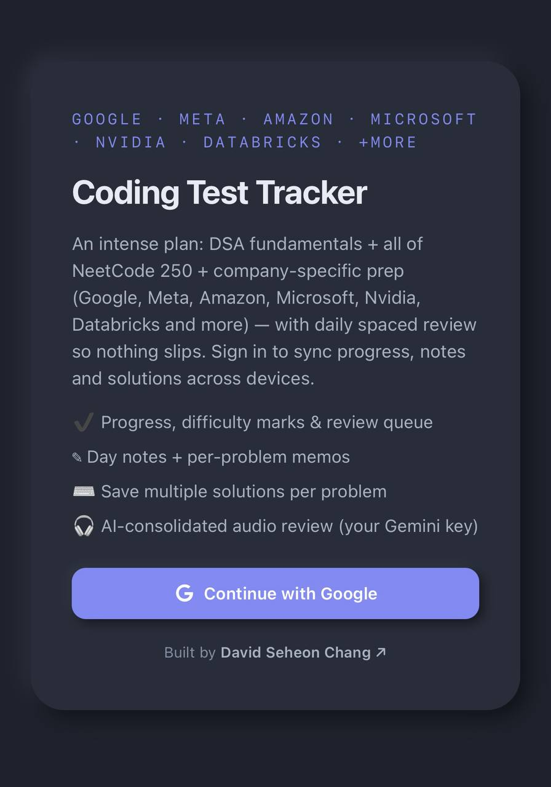
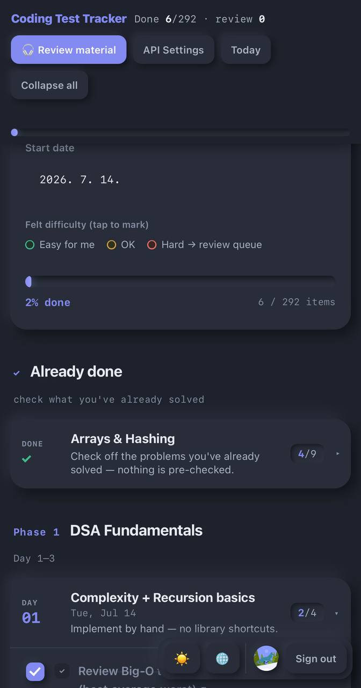
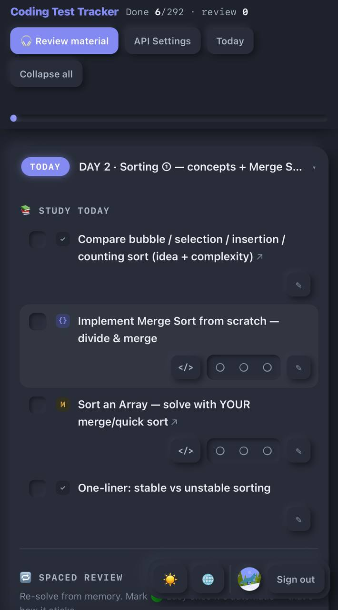
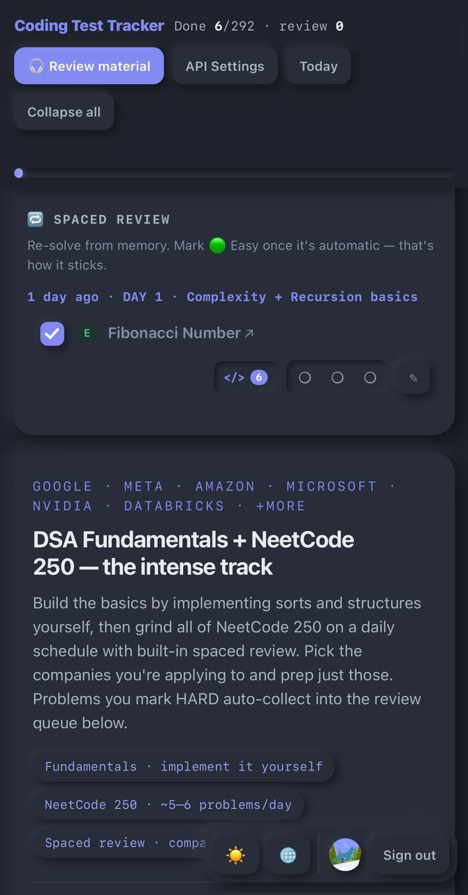

Coding Interview Prep
53-day technical interview tracker
Available at: coding-interview-prep-two.vercel.app
Issue / Solution
The Issue: Students preparing for technical interviews usually juggle a scattered mix of spreadsheets, NeetCode tabs, random docs of notes, and half-finished practice problems. There is no single place that combines a structured study plan with their own progress, their multiple attempted solutions per problem, and their notes, and none of it follows them across devices. Reviewing what they actually learned is even harder, because those notes never get consolidated.
The Solution: I built Coding Interview Prep, a study platform that wraps a 53-day curriculum — DSA fundamentals, all of NeetCode 250, and company-specific sets for Google, Meta, Amazon, Microsoft, Nvidia, and Databricks — around each student's personal progress. Users sign in with Google, and their progress, notes, and saved solutions sync to the cloud per account with 30-day sessions. Each problem supports multiple saved solutions in NeetCode-style tabs, and an AI feature consolidates a student's own notes into an audio review using their own Gemini key. It ships as a single Next.js app on Vercel.
Overview
Coding Interview Prep is a full-stack Next.js app for students working through a technical interview roadmap. The tracker lays out a 53-day plan and lets a signed-in student check off problems, keep per-problem notes, and store several solution attempts per problem. Because everything is keyed to a Google account and synced to a serverless database, a student can start on a laptop and continue on their phone without losing state. The interface defaults to English with a Korean toggle and is designed to work well on mobile.
The app is deliberately lightweight: one Next.js deployment serves both the UI and the API routes, authentication is handled by NextAuth with Google OAuth, and per-user data lives in Upstash Redis. The optional AI review runs server-side with a key the student supplies themselves, so no shared API cost or exposed secrets are involved.
System Architecture
The system is one Next.js deployment: the App Router client and the serverless API routes ship together on Vercel. NextAuth handles the Google OAuth flow, Upstash Redis stores each user's state, and Google's Gemini API generates the AI review — both reached only from the server so keys never touch the browser.
System Architecture
What I Built
- A Next.js 14 (App Router) app that serves both the study UI and its serverless API routes from one Vercel deployment.
- Google sign-in via NextAuth v4 with 30-day persistent sessions, so a student's data is tied to their account.
- A 53-day curriculum covering DSA fundamentals, all of NeetCode 250, and company-specific sets (Google, Meta, Amazon, Microsoft, Nvidia, Databricks, and more).
- Daily spaced review with per-problem difficulty marks (Easy / OK / Hard), where problems marked Hard auto-collect into a review queue.
- Per-user cloud sync of progress, notes, and solutions in Upstash Redis, so state follows the student across devices.
- Multiple saved solutions per problem in NeetCode-style tabs, plus per-problem notes.
- An AI audio review that consolidates a student's own notes, generated server-side with the student's own Gemini key.
- English/Korean language toggle and a mobile-responsive layout.
Study Workflow
A student signs in with Google and lands on the tracker, which lays out the 53-day plan. As they work through problems they check off progress, jot per-problem notes, and save one or more solution attempts per problem in tabs — useful for keeping both a brute-force and an optimized approach side by side. Every change is written back to their account, so the same board is waiting for them when they reopen the app on another device. Because writes are last-write-wins across simultaneous devices, the model stays simple and predictable for a single student studying.


Daily Study, Solutions & Review
Each day surfaces a concrete checklist of concepts and problems, and each problem opens into
a solutions view with NeetCode-style tabs (</>), where a student can keep
several saved attempts alongside per-problem notes. Problems marked Hard flow into a spaced
review queue that resurfaces them later to re-solve from memory. When a student wants to
study back what they have learned, the AI review consolidates their notes into an audio
walkthrough; the Gemini key is entered once in settings and stored server-side, so the
summary is generated on the server and the key is never exposed to the browser.

</>) and a
note attachment.

Implementation
Authentication is handled by NextAuth v4 configured for Google OAuth. Signing in issues a
session that persists for 30 days, and every API route reads that session to scope data to
the current user. The serverless API routes cover four concerns: auth
(NextAuth), data (reading and writing the user's tracker state),
settings (storing the Gemini key server-side), and summarize
(calling Gemini to build the audio review). Because it is all one Next.js app, the client
and these routes deploy together and share the same origin.
Per-user state lives in Upstash Redis, a serverless key-value store, keyed by account. Each user's document holds progress, notes, and saved solutions, budgeted at roughly 900 KB — enough for hundreds of solutions. Concurrent edits from multiple devices resolve last-write-wins, and a reset option clears progress while keeping the account intact. Keeping secrets and AI calls on the server keeps the browser bundle free of any credentials.
Deployment
The app deploys to Vercel straight from GitHub. Setup wires in Google OAuth credentials (client ID and secret), an Upstash Redis connection, and NextAuth environment variables; each student later supplies their own Gemini key through the in-app settings. Because both the frontend and the API run as one Vercel project on free-tier services, the platform stays essentially cost-free to host.
Stack
Next.js 14, React, JavaScript, NextAuth v4, Google OAuth, Upstash Redis, Google Gemini API, Vercel.